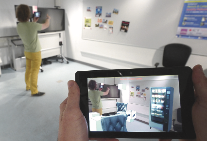
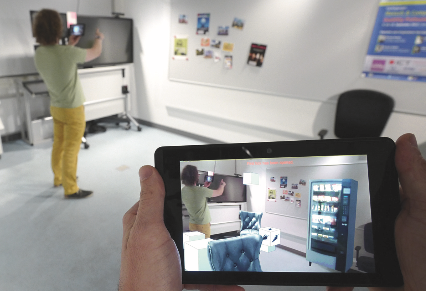
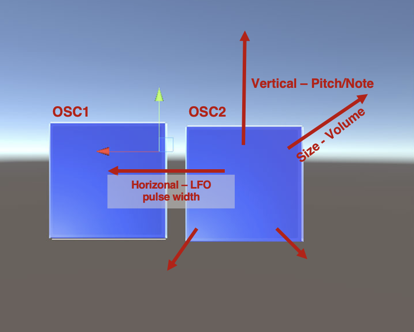
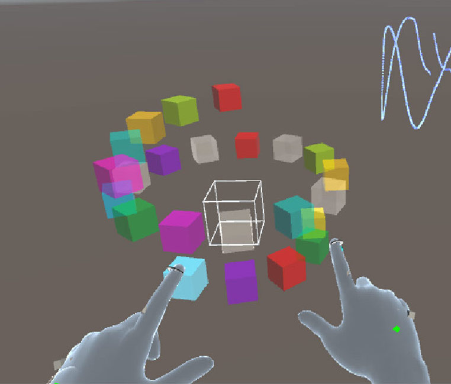
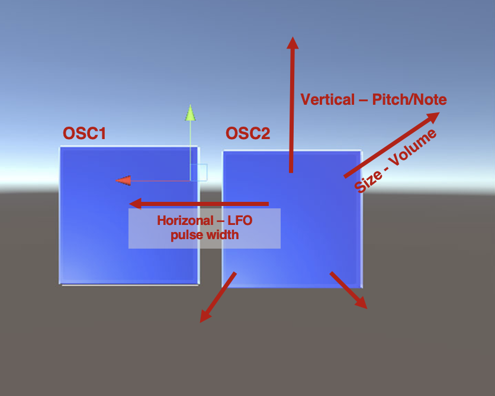
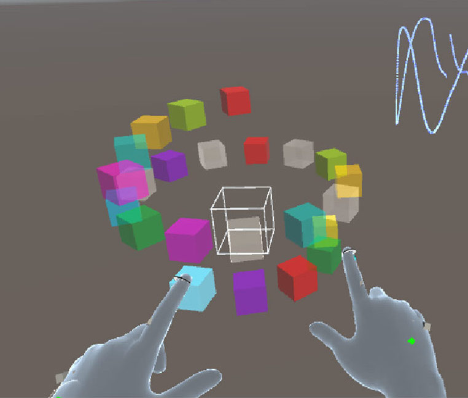

A story about creating musical instrument in computers
Exploring 3D Musical Gestural
Control
in Augmented Reality
Yichen Wang
Supervisors: Matt Adcock, Mingze Xi (Data61, CSIRO) Charles Martin (ANU)


(DIYs & hardware)
(mobile)


What does Augmented Reality mean in terms of music?
What does Augmented Reality mean?
- the Reality-Virtuality continuum (Milgram & Kishino '94)
- A taxonomy of MR *Displays*: Extend World Knowledge, Reproduction Fidelity, Extend Presence Metaphorc (Milgram et al. '95)
- What is Mixed Reality ? (Speicher et al. CHI'19)
- Strong AR - Mixed Reality - HoloLens
- Different applications: MR collaboration (Muller et al. CHI'17) & Target selection accuracy in AR headset (Kyto el al. CHI '18)
- Dimensions: degree of interaction, level of virtuality, level of immersion, number of users and number of environments

 

It depends!


Yarmi (Laurenzo et al. NIME'09)
Sonic Sculpture (Martin et al. NIME'20)
Ripples (Wu & Freeman NIME '21)
Why and what are we interested?
-
New musical interface:
ultimately a mixed reality instrument playing experience
- easy to play ?
- accessible ?
- expressive musical control ?
- facilitate new music creation ?
- 3D user interface: free hand interaction (6 degree of freedom, fully articulated model and direction manipulation)
- Collaboration: access to the reality
- Performer/Researcher/Audience

What are the issues?
- Lack of expressiveness
- What is an authentic design that benefit musicians for music making?
- How and Where it will be used?
RQ3: How this interface can be used collaboratively for music ensemble?
RQ1: What factors contribute to the expressiveness of a 3D musical interface?
RQ2: How can a gestural-sound mapping enhance or affect the experience of musicians in the 3D AR system?
- Sound control ≠ Sound Expression (Dobrian & Koppelman NIME '06)
- An interface that supports "play"
- Gestural control of sound synthesis: various data acquisition from input devices including hand, mediated devices, physiological signals, etc (Wanderley & Depalle Proc IEEE '04)

-
When is a Guitar not a Guitar?: a study of interaction modality: plucked strings vs touch sensor (Harrison et a.
NIME '18)
- Guitarists: "the strings feeling more *natural* to play and allowing the use of *existing techniques* that they had from the guitar."
-
Non-musicians:
- knows what to do when see the strings
- the sensor: feel confused - what gestures?
- touch screen was more fun
- the strings provided new creativity
- In 3D, exiting musical interactions are mainly navigation, selection & manipulation (Berthaut J. New Music Res. '21)
- Gestural interaction in MR - the desire for "natural" user interaction, but currently poor affordances :( (Grubert '21)
- But - abrupt design of sound?
-
The input-sound mapping in NIME design
- Turning knobs and patching - synthesisers/electronic
- Finger-string - instruments (e.g. chordophone/guitar)
- mixed reality:
Hand gestures - what sound?
- Designer = composer = performer (Morreale et al. NIME '18; Sullivan et al. J. New Music Res. '21)
- Design for appropriation (Alan Dix Proc HCI '07; Zappi and Mcpherson NIME '14)
- VRMI/MRMI design guideline: (Serafin el al. Comput. Music J.'16;
Artherton & Wang J. New
Music Res. '19; Zellerbach &
Roberts NIME '22)
- Design for the body
- Designing to the medium - that is not possible in the reality

- Different approaches
- Based on different perspectives (O'Modhrain Comput. Music J. '11)
- performer 👩🏼🎤
- audience 👩🏾🦱👨🏻🦳👩🏻🦰🧑🏻🦱👶🏼
- developer 👩💻
- etc.
- First-person approach in HCI (Desjardins et al. TOCHI '21)
- Practice-lead: artistic; Rehearsal as research: development-refinement (Martin and Gardner '18)
- Participatory design: what do my users want?
1. An autobiographical study exploring head-mounted AR musical interfaces:
"what is an authentic design of NIME in Hololens? Does instrument playing work?"
- Controls:
- knobs and sliders: tuning
- far pointer interaction: less effort, tho similar to using controllers
- hand interaction: using fingers - more varieties
- Sound
- More: NIME '22
 



- Musical tasks: more structured to test various aspects of the instrument
- Questionnaire + semi-structured interview
- Functionality,learnability, explorability and enjoyment
- How was your overall experience? What impressed you in terms of interaction, sound and visuals?
- High explorability and learnability
- Enjoyment varies
- Less good functionality
- ANU human ethics research protocol: 2022/413
- Reflexive thematic analysis: collating important codes and themes
-
Gestures in space and usability
- hand tracking & explorability
- accessible
- Performer's identity: enjoyment
- Embodiment, new musical experience, etc
Summary
- An authentic design of new musical interface in MR headset
- Formal user studies: various interaction possibilities using hand gestures and issues
- Performing with others in gig to keep experimenting and exploring
Now and onwards
- Upcoming performance at OZCHI2022
- Improve the hand tracking issue
- Specifically looking into gesture analysis
- Longitudinal study
Reference
- Iwai, T., & Nishibori, Y. (2005, August). Tenori-on. In SIGGRAPH 2005.
- Jordà, S., Kaltenbrunner, M., Geiger, G., & Alonso, M. (2006). The reacTable: a tangible tabletop musical instrument and collaborative workbench. In ACM SIGGRAPH 2006 Sketches (pp. 91-es).
- Pardue, L. S., Buys, K., Edinger, M., Overholt, D., & McPherson, A. (2019, March). Separating sound from source: sonic transformation of the violin through electrodynamic pickups and acoustic actuation. In NIME 2019 New Interfaces for Musical Expression conference (pp. 278-283).
- lady's glove - LAETITIA SONAMI
- Martin, C. P., & Tørresen, J. (2017). MicroJam: an app for sharing tiny touch-screen performances. In Proceedings of the International Conference on New Interfaces for Musical Expression (pp. 495-496). Aalborg University Copenhagen.
- Wang, G. (2009, June). Designing smule’s iphone ocarina. In Proceedings of the International Conference on New Interfaces for Musical Expression. Pittsburgh (Vol. 291).
- http://kymatica.com
- McLean, A., & Wiggins, G. (2010). Tidal–pattern language for the live coding of music. In Proceedings of the 7th sound and music computing conference (pp. 331-334).
- Lucas, P. P., Queiroz, M., & Sedó, A. X. (2019). AuSynthAR: A simple low-cost modular synthesizer based on Augmented Reality. In NIME (pp. 405-406).
- Schlagowski, R., Wildgrube, F., Mertes, S., George, C., & André, E. (2022, June). Flow with the Beat! Human-Centered Design of Virtual Environments for Musical Creativity Support in VR. In Creativity and Cognition (pp. 428-442).
- Wakefield, G., Palumbo, M., & Zonta, A. (2020, July). Affordances and Constraints of Modular Synthesis in Virtual Reality. In Proceedings of the International Conference on New Interfaces for Musical Expression (pp. 547-550).
- Hamilton, R. (2019, March). Coretet: A Dynamic Virtual Musical Instrument for the Twenty-First Century. In 2019 IEEE Conference on Virtual Reality and 3D User Interfaces (VR) (pp. 1395-1395). IEEE.
- Charles Martin 2020
- Twilight (2013), Stanford Laptop Orchestra
- Pure Data
- Qianchao Lan 2022